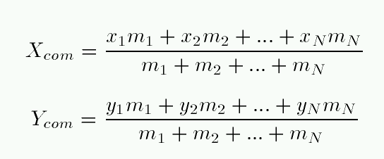
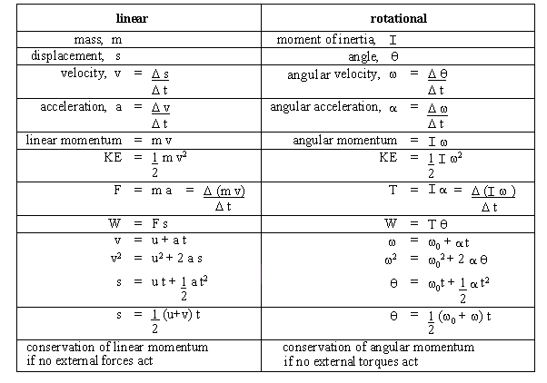
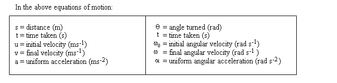
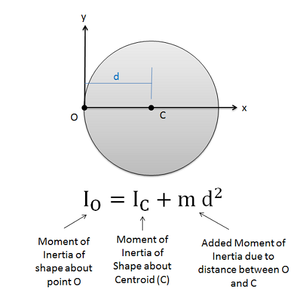
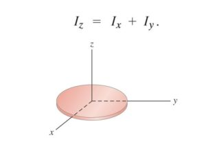
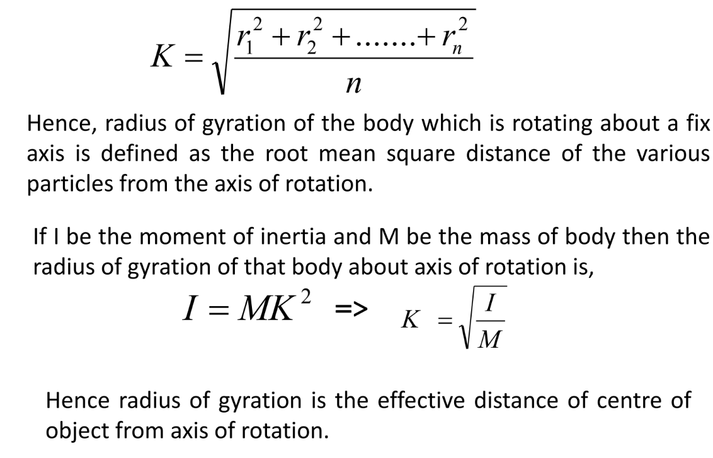

Rotational Dynamics
1. Introduction :
A type of motion in which a body turns about an axis, is known as rotational motion.
Rigid bodies:A body in which distance between any two particle does not change on the application of external force.
Center of mass:
- Centre of mass is the point at which total mass of body is assumed or supposed to be concentrated.
- Center of mass may or may not lie within material of the body.
- Center of mass may or may not lie in geometrical centre.
- Torque at the center of the mass is always 0.
- If external force is applied on center of mass, it gives linear acceleration to a rigid body.
- If external force is applied on position other than center of mass, it gives angular motion.
- Position of center of mass is independent of internal force, but depends only on external force.
- Center of mass always depends upon the distribution of particle within the body.
Formula for Centre of Mass:
Centre of gravity:
Centre of Gravity is the point at which the entire weight of the body acts. 99.99% cases Center of gravity and Center of Mass coincide.
Comparision between Linear motion and Rotational motion.
 2. Moment of Inertia
Defination: A property of body by virtue of which it opposes any change in state of rest, or of uniform rotation about an axis.
It can also be said as the product of mass and the square of radius.
- It depends on following quantities:
- Mass of the body
- Size of the body
- Density of the body
- Axis of rotation
- Distribution of mass
- Distance from the center
Formulae for Moment Of inertia(MOI)
Moment of Inertia of Some Bodies

Parallel Axis Theorem

Perpendicular Axis Theorem

The moment of inertia along Z-axis will be equal to sun of moment of inertia along X-axis and Y-axis.
Or, The moment of inertia for plain laminar body about any axis perpendicular to its plane is equal to the sum of moment of inertia about two mutually perpendicular axes contained in its plane and intersecting each other at a point.Provided that perpendicular access passes through the same point of intersection.
3. Radius Of Gyration
The perpendicular distance between the axis of rotation and a point where all the mass is assumed to be concentrated (the centre of mass) is called radius of gyration.

4. Torque (τ)
Turning effect of force about an axis of rotation is torque.It is moment of force.
The direction of torque can be found by using right hand thumb rule.
Formula: |τ| = Force * perpendicular distance from axis of rotation.
5. Relation between torque and moment of inertia : Newton's Second law of rotation
From Second law of motion, we have:
Thus Torque is the product of moment of inertia and angular acceleration, same as F=ma in linear motion.
5. Angular momentum (L)
The moment of linear momentum is angular momentum
Formula: |L| = linear momentum * perpendiculardistance from axis of rotation
It is expressed as
L=Iω,
where,
L is the angular momentum in kg m²/s;
I is the moment of inertia in kg m²; and
ω is the angular velocity about an axis of rotation in rad/s.
Note that the moment of inertia depends on the rotating mass and its distribution about an axis. Each solid object (e.g., solid cylinder, hoop, disk) has a corresponding equation for its rotational inertia.
6. Relation between angular momentum and torque

Thus, torque acting on a body is equal to the time rate change of angular momentum. This is analogous to the Newton second law of motion, which state that the net force acting on a body is equal to time rate change of linear momentum.
So we can apparently say that the equation is the rotational form of Newton's second law of motion.
7. Principle of conservation of angular momentum
It is states that "if net external torque acting on a body is zero, then the total angular momentum remains constant".
Thus L=constant
Iω = constant
therefore,
I1 ω1= I2 ω2
Here we see that angular velocity and moment of inertia are inversely proportional, So if any cases the moment of inertia increases, that will decrease the angular velocity and vice versa.
Applications of Conservation of angular momentum
- Ballet dancer: When ballet dancer stretches her arms in the air, it increases the radius, which ultimately increases the moment of inertia,as we know, that the moment of inertia and angular velocity are inversely.so the angular velocity will decrease
And if she brings her hand near to her body. That will decrease the radius and moment of inertia, increasing the angular velocity. - Revolution of planet around sun: Is we know that the planet revolves around an elliptical path. The path that is nearer or which has the least radius has less movement of inertia and more angular velocity.Ultimately, when it's near to the sun, it has less radius, which is summer season,So the days in summer are fast.
- When polar ice melts,It increases the time: As we know that when ice melts the radius of the earth increases. When the radius increases, movement of inertia increases too.And we know the relation that when movement of inertia increases, angular velocity decreases by the conservation of angular momentum.
And also from the relation, ω=2π/T (angular velocity is inversly proportional to time), Since angular velocity decreased time period geometrical increased.
8. Work done by torque
This work done may increase the rotational kinetic energy of the body or may have been used to overcome the resistive force such as friction that are present.
Also, P=τω
8. Work done by Couple
A couple, such as represented above, consist of two equal and opposite forces whose line of action do not coincide. A couple tends to produce rotation.
Suppose that table rotate the disc through a angle is represented below:
Notice that:
Thus, We see that torque in the rotational case corresponds to force in the linear case.
9. Kinetic energy of rotating body and rolling body
Kinetic energy of a rotating body
When a body rotates, it possesses energy which is due to rotation. This energy is due to its motion rather than its position, so it is kinetic energy. To make it distinct from the kinetic energy it would have if it were undergoing translational motion, it is referred as rotational.Kinetic energy.

Work done = final K.E - Initial K.E = Change in K.E
This is work energy theorem for rotational motion.
Kinetic energy of roling body
According to this statement, rolling motion is combination of translational kinetic energy and rotational kinetic energy and then the kinetic energy of rolling motion is given as:
10. Acceleration of rolling body down an inclined plane
This can also be written as,
where I= moment of inertia
Subject matter of rotational dynamics ends here.
Thank you!
A quick tip (Rotational Dynamics)
It is easier to study the rotational dynamics comparing with analogous term in linear dynamics.
One important tip while studying rotational dynamics in Grade 12 NEB is to practice solving problems using both the rotational analogs of Newton's laws and the conservation laws of angular momentum and energy. It is also helpful to familiarize yourself with the concepts of torque, moment of inertia, and angular velocity. Additionally, drawing clear diagrams and labeling your variables can make problem-solving easier and more organized. Finally, make sure to practice regularly to solidify your understanding of the concepts and equations involved in rotational dynamics.
Thank you !